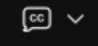

AI by Design for Collaboration
LABCOL-1709
Hussain Ali, Technical Marketing Engineer
Omer Ilyas, Technical Marketing Engineer
Webex Suite AI Overview
In this hands-on lab, you will unlock the revolutionary potential of Artificial Intelligence (AI) across the Webex Suite (Messaging and Meeting). As AI continues to redefine the modern workplace, this lab is designed to show you how these technologies fundamentally transform collaboration, communication, and customer interactions. You will explore how Webex AI empowers administrators with better oversight, enriches employee productivity through smarter workflows, and delights customers with more personalized experiences.
This task is now completed. Proceed to the next task
Accessing your Lab
Click on the Details from the dCloud eXPO page and use the Host, Username and Password to connect using Cisco Secure Client (formerly AnyConnect) to your dedicated dCloud session.
Also note your session ID as displayed below. In the example below, following are the details.
AnyConnect (Cisco Secure Client) Host: use the host provided in your assigned dCloud session.
AnyConnect (Cisco Secure Client) Username: use the username provided in your assigned dCloud session.
AnyConnect (Cisco Secure Client) Password: use the password provided in your assigned dCloud session.
Screenshot 4: example private access or account details omitted from the public edition. Use your assigned session details.
Screenshot 5: example private access or account details omitted from the public edition. Use your assigned session details.
Important! Each dCloud session has its own unique details. Do not use the credentials shown above in the screenshots.Continue to next step after connecting to the pod via the Cisco Secure Client.
Connect to the Workstations via Remote Desktop
Connect to the Remote desktop of Workstation 1. On your session topology click workstation 1 and click Remote Desktop to connect
The user for Workstation 1 in this lab will be Charles Holland (cholland), username and password will be provided in a file on the Desktop of the workstation.
To connect to Workstation 2, follow similar instructions. The user for Workstation 2 will be Anita Perez (aperez).
Screenshot 6: example private access or account details omitted from the public edition. Use your assigned session details.
Within Workstation 1’s Desktop, there will be a file named WEBEX_PASSWORD.txt or Session_Info.txt as shown above. Launch the file to get the username and password for the Webex App and the Collaboration Control Hub for this lab.
Screenshot 8: example private access or account details omitted from the public edition. Use your assigned session details.
OR
Screenshot 9: example private access or account details omitted from the public edition. Use your assigned session details.
Login to the Webex Clients
Login to the Webex App from within workstation 1 for the user Charles Holland (cholland) and from within workstation 2 for the user Anita Perez (aperez). Credentials should be in the respective files placed on the Desktops of the respective workstations. Refer to an example file with the credential details:
Screenshot 9: example private access or account details omitted from the public edition. Use your assigned session details.
Login to Collaboration Control Hub from within Workstation 1
Lauch the Chrome browser from within workstation 1and go to https://admin.webex.com. Login using the credentials from the WEBEX_PASSWORD.txt file from the previous section. If you do not see the WEBEX_PASSWORD.txt file, follow the instructions below. Otherwise, begin Module 1 of this lab. All the lab tasks should be completed from within Workstation 1
Now you can proceed with the lab modules.
Alternate instructions for accessing Collaboration Control hub
Before we can proceed to login to Collaboration Control Hub, we need the DNS name, username, password, and session ID. Within the session details page, select DNS Address and copy the top level FQDN as displayed below. In the example below:
DNS Address / FQDN of our Webex organization: use the FQDN shown in your assigned session.
Session ID: use the ID shown in your assigned session.
Control Hub Username: cholland@<FQDN>, using the FQDN shown in your assigned session.
Control Hub Password: obtain the password privately from your assigned session or instructor.
Screenshot 10: example private access or account details omitted from the public edition. Use your assigned session details.
1) On your PC, open Chrome browser and navigate to https://admin.webex.com
2) Login as Charles Holland with the email and password provided privately for your assigned session.
Once logged in, you should see this home page for Collaboration Control Hub:
Now you can proceed with the lab modules.
Module 1: Setup your Lab environment
Module 1a: Activating and configuring the Cisco AI Assistant in the Control Hub
The Webex Control Hub serves as the central command center for Webex AI. As an administrator, you can decide which AI capabilities are enabled, ensuring they align with your organization’s policies while maximizing productivity. In this module, you will learn how to navigate the AI settings to enable the suite-wide features that power the subsequent modules in this lab.
Open new browser tab with workstation 1’s browser and go to URL https://admin.webex.com.
Login to Collaboration Control Hub with Charles Holland credentials. These are the credentials from the file on Workstation 1’s Desktop. Refer to the screenshot below for credentials.
VERY IMPORTANT NOTE: Every session/pod has its own credentials; the below screenshot is for reference purpose only. Use the credentials from your own session/pod.
Screenshot 11: example private access or account details omitted from the public edition. Use your assigned session details.
Once logged into Control Hub, for security reasons, Collaboration Control Hub signs out every 20 minutes (Idle timeout) by default. For this lab, let’s make the idle time out longer so the Control Hub does not sign you out often during this lab. Go to MANAGEMENT > Organization Settings > Control Hub’s idle timeout. Drop down the option for Control Hub idle timeout and select 12 hours or no timeout. Click Save.
Next, we will turn on AI features including the Cisco AI Assistant for your pod’s Webex tenant. Continuing on Organization Settings page scroll down to section Cisco AI Assistant & AI features > click on Customize AI Assistant & AI features as shown below.
Ensure all the toggles are turned ON except for AI Assistant Integrations, External sources (General AI Settings), AI Assistant workflow automations. Click Save at the bottom right.
This completes Activating and configuring the Cisco AI Assistant and its associated features within Webex Control Hub
Module 2: Enhancing Messaging with Webex AI
Module 2a: Ask Me Anything: AI Assistant for Messaging
The Ask Me Anything (AMA) feature in Webex messaging is part of the Cisco AI Assistant designed to help users quickly find information within their conversation spaces. It allows users to ask questions about recent discussions, content, or context directly within a space. Any questions that are asked and the answers received are only visible to you and are not saved in the space.
NOTE: The Webex App for the user Charles Holland, logged into workstation 1 may already be preloaded with some chat. If not, feel free to do some back-and-forth chat with the user Anita Perez (Webex App logged into workstation 2).
Continuing on workstation 1, bring up Webex app (logged in as Charles Holland)
Go to the app header on top right corner and click the AI Assistant [ ]. Then, select a space from your spaces list.
In the Cisco AI Assistant panel, select:
Ask me anything about recent activity—ask AI Assistant questions, to search for, or find out more, about conversations and content discussed in the space.
Answers come with highlighted citation links that you can click, to go directly to the source messages, so you can quickly get to specific content for more information.
Click More [], and select Copy [], to copy answer content and share elsewhere.
Click Stop generating to cancel an AI Assistant reply.
Module 2b: Space Summaries: Automated Conversation Overviews
When you're busy, or you've been away from the office, catching up with all your spaces can be challenging. AI Assistant can generate space summaries to help you quickly catch up on missed messages and conversations in the space. Stay informed on decisions, key points, and get up to date with the discussion at a glance.
Continuing on workstation 1, Cisco AI Assistant on Webex, click on Summarize as shown below and select 1 hour or 1 week.
Your summary will be displayed in the Cisco AI Assistant panel.
Module 2c: Smart Rewrite: AI-Powered Message Refinement
Enhance and improve your communication and collaboration with your team, with AI powered message rewrites. AI Assistant analyses your message and provides options to adapt the style, tone, and content quality, to help you communicate more effectively.
Continuing on workstation 1’s Webex App. Type any question in chat window and click Rewrite message []. Example: I want the call to happen asap
AI Assistant analyzes your message and provides options to fix mistakes, improve spelling and grammar, update format and style, and change the message tone.
It will open the rewrite pop-up window. Choose any of the available drop-down options to rewrite your message and click Apply to generate a preview. You can click [ ] to generate more preview versions. To go back and forth between versions, click the left and right arrows. Finally when you are satisfied with a new version the message, click Update message, or if you wish to use your original message you can discard all changes by clicking Cancel. For now keep the message generated with AI (with all your desired options) and press Enter to send your updated message. See the screenshots below for an example
Module 2d: Real-Time Message Translation
Promote more effective communication and break down barriers in your direct or group spaces with our translation feature. Enable your target language in your settings, and translate individual messages, or all messages in your direct or group spaces in real time.
To translate messages in a space from any language to your desired language, select your language in your settings.
Continuing on workstation 1’s Webex App, click on Profile picture (top left corner) on the Webex app and go to Settings.
Screenshot 32: example private access or account details omitted from the public edition. Use your assigned session details.
It will bring up Webex Settings pop-up window. On the pop-up window select General > Translation language. Select your preferred language for translation from the drop-down list, and click Save.
Now, you can either translate any individual message in a space to your selected language Or you can translate all the messages in a space by going to the space settings menu and selecting Start live translation, that will translate all the messages in space. See the screenshots below for reference.
NOTE: Sometimes the live translation takes couple of seconds or few messages to start working.
This completes this module.
Module 3: AI-Powered Webex Meetings
Note: So far in this lab, we have logged into virtual workstations with no microphone capabilities. You may login to the local machine as Charles Holland (previously logged into virtual workstation 1 as cholland) to take advantage of the microphone of your local machine for testing features that need audio.
For Webex Meetings, Webex uses AI-based speech recognition models in the cloud to analyze live meeting audio and perform automatic language detection, identifying the spoken language using acoustic and linguistic patterns. Once detected, neural speech-to-text models generate real-time transcription, which runs continuously in the background.
Closed captions are the user-visible display layer that presents this transcribed text during the meeting and can be turned on or off by participants.
For multilingual meetings, Webex applies neural machine translation models to convert the transcribed text from the detected source language into a selected target language, enabling real-time language-to-language translation. It also uses contextual Natural Language Processing (NLP) which is an advanced AI technique that understands words based on the surrounding context rather than in isolation. This allows it to accurately interpret meaning, improve grammar, and choose the correct words in transcription or translation. By “reading between the words,” it handles ambiguity, idioms, and nuanced language more like a human would. Large language models and contextual NLP further reinforce language detection, disambiguation, and dynamic language switching.
On top of this foundation, the AI Assistant adds a higher intelligence layer that analyzes meeting content to generate summaries, highlights, and action items, and enables features like “Catch me up” and “Ask me anything” during meetings. AI also enhances media quality by reducing background noise, optimizing audio and video, and improving framing and visuals. Emerging AI agents extend this capability by automating follow-ups, suggesting engagement tools, and assisting with scheduling, making meetings more productive, inclusive, and proactive.
AI is also used for Webex meeting recordings, to analyze captured audio and content and convert spoken conversations into time-aligned text using neural speech-to-text engines. The system automatically detects the spoken language, identifies speakers, and enriches the recording with searchable transcripts and captions. After the meeting, large language models interpret the transcript and meeting context to understand topic flow, intent, and key moments. When the Cisco AI Assistant is enabled, these models generate intelligent outputs such as summaries, highlights, action items, and chapters. This AI-driven processing transforms recordings from passive videos into searchable, contextual, and actionable meeting assets.
Module 3a: Schedule your meetings with Cisco AI Assistant
Webex Meetings can be scheduled in several ways. Meetings can be scheduled directly from the app using the Schedule a Meeting button. Meetings can be scheduled from Microsoft Outlook, either via Hybrid Calendar Service by specifying “@webex” in the meeting location or via the Webex Integration to Microsoft Outlook. Meetings can also be scheduled via the Webex Site itself, or via APIs.
In this lab we will use the latest method to schedule a Webex Meeting – via the Cisco AI Assistant. Using the AI Assistant, the user can interact with the Assistant in natural language, specifying a name for a meeting, who they want to attend, a duration, and a suggested time. The assistant will gather this information, look up the requested attendees and suggest three times for a suitable meeting close to the requested time. It will consider free/busy status based on calendar, as well as time zone and working hours.
Continuing on your workstation 1 bring up Webex.
In the Webex App, open the meetings tab and expand the Cisco AI Assistant
In the Ask AI Assistant window, we will converse with the assistant to schedule a meeting on our behalf. Below is an example of some text you can type to schedule the meeting
“Schedule a meeting with @aperez@cbXXX.dc-YY.com starting in 5minutes. In the meeting we will discuss Project Las Vegas. The meeting should last 60 minutes”
NOTE: Replace the cbXXX.dc-YY.com with your session domain.
Screenshot 39: example private access or account details omitted from the public edition. Use your assigned session details.
The assistant will capture the information and summarize the request. It may suggest additional times if the requested time does not suit all attendees. Feel free to update anything by further conversation or confirm.
The assistant will go ahead and schedule the Webex meeting
Module 3b: Language detection, Closed Captions and Real time translation
In Webex Meetings, powered by AI, Webex can automatically detect the language being spoken, so you don’t have to set or guess it yourself. Once the speech is recognized, real-time closed captions appear on screen, helping everyone follow along – even if the audio is unclear or there is background noise. For meetings with participants speaking different languages, Webex AI can instantly translate what’s being said, allowing everyone to see the conversation in a language they understand. This makes communication smooth, inclusive, and effortless, no matter where participants are in the world.
Continuing on the workstation 1, go back to the browser tab where you have logged into Control Hub. Navigate to SERVICES > Meetings > Select your site (cbXXXYY.webex.com).
On the Meeting site Go to Common Settings > Site Options.
Screenshot 41: example private access or account details omitted from the public edition. Use your assigned session details.
On the site options page, scroll down to Closed captioning configuration and toggle ON the option Allow real-time translation and transcription in multiple languages. Click Save.
On workstation 1 bring up Webex. There will be a meeting scheduled from the previous module and it will display One Button to Join (OBTJ) the meeting. Click on Start to start the meeting. It will bring up the meeting window, click Start meeting. Once the meeting is started, click Closed Captions [

] (towards bottom left of the meeting window)Now go to browser tab where you have connected to the Antia Perez workstation (Virtual workstation) over WebRDP. There will be a meeting reminder (notification) to join the meeting on the click Join on the reminder to join the meeting. It will launch the meeting window, click Start meeting.
Ignore the warning about microphone on virtual workstation. Click Join meeting on meeting window. Once the meeting is joined, click Closed Captions [] (towards bottom left corner of the meeting window) on Anita Workstation as well (Virtual workstation).
Once Closed Captions are enabled on Anita workstation, observe that it gives options for Spoken language and Caption language. Make sure Caption language is selected as English.
Go back to workstation 1’s Webex App (logged in as Charles Holland) meeting window and click on drop down arrow, next to Closed Captions icon [], to see the current Spoken language and Caption language. DO NOT change any settings.
Now, on workstation 1’s meeting window (logged in as Charles Holland) start talking a few sentences in a different language (could be French or German or Hindi etc.,). Once you have talked around 3 to 5 sentences, notice that Webex AI will auto detect the Spoken language and update it on Anita’s workstation 2 under . Also, as the Caption language is chosen as English, Webex AI will translate them to English and display on both workstations.
Also, if Webex AI is taking long to detect the spoken language, could be due to background noise or you are in a crowded environment etc., you can drop down the Spoke language and Caption language options and select the language manually from supported list of languages. For the up-to-date supported languages refer to below URL.
Now, switch back to Antia workstation (workstation 2) over WebRDP, drop down option for Caption language and set it to one of the available languages. Example: bosanski/Bosnian
On Charles meeting window (workstation 1), manually set the Spoken language to English (or any other language). Change the Caption language to French (or any other language). Once you have set the desired languages, start talking in English.
Notice that both the workstations display captions in their respective selected Caption languages.
If you are interested to explore further, you can choose to select any set of different languages and observe that Webex AI will auto detect Spoken language (or you can set it manually) and translate it to desired/chosen Caption language.
Keep the meeting running and proceed to next module.
Module 3c: AI Assistant in Webex Meetings
Now, let's add/enable Cisco AI Assistant to this meeting and see how it helps to automatically capture meeting highlights, action items, and summaries to help participants stay aligned without manual notetaking. During the meeting, the AI Assistant identifies key discussion points and important moments, even if users join late. After the meeting, it generates a concise summary that outlines what was discussed and the overall context. Action items are clearly extracted so teams know what needs to be done next. In the backend, the AI Assistant uses cloud-based speech-to-text and large language models to listen to meeting audio, understand conversational context, and intelligently extract decisions, tasks, and key moments—turning live conversations into structured meeting notes.
Make sure that the meeting from the previous module is still running.
On workstation 1’s meeting window, click AI Assistant. It will bring up a pop-up window to Start the AI Assistant for this meeting. Click Start.
It will start the AI Assistant for this meeting and plays a recording saying that “this meeting is being transcribed and summarized”. Note, in the Control Hub, the administrator can enable Automatic AI Assistant summarization on call recording, meaning when a call recording is started, the AI Assistant will automatically start summarizing.
Now, click Record button on the meeting window, to start recording of this meeting. It will bring up a pop-up window with available options for recording, leave all defaults and click Record again on the pop-up window.
We will use this meeting recording in the next module, for now make sure you have turned on recording and continue with the current module.
Now, on the physical/attendee workstation, start talking and mention Anita Perez’s name along with some action items, like Anita we need to push the software release deadline, or Anita send a follow up email to the customer or Anita we need to check on shipment delivery etc.,
Now, go to Anita’s workstation (workstation 1) over WebRDP and the current meeting window. Explore any of the AI Assistant options available: Catch me up or Was my name mentioned? Or What are the action items?
You can also ask anything about this meeting like what are the highlights? Or how was the customer response etc. On the current meeting window, type what you want to ask (in Ask me anything about this meeting window). AI assistant will answer your meeting depending upon information available from this meeting summary.
You can explore and ask more questions about the meeting and when done, end the meeting [] on both the workstations.
Once the meeting has ended, within a minute or two, on attendee workstation (physical workstation) you will see a pop-up window saying “meeting summary is ready”. Click View.
It will bring up the Webex meeting summary and transcript as shown below.
This completes the lab activity.